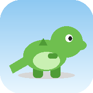

Kyzen TeamDino Runner ("Aplikasi") dikembangkan oleh Kyzen Team ("kami"). Halaman ini menjelaskan data apa saja yang dikumpulkan saat kamu memainkan game ini dan bagaimana data tersebut digunakan.
Sebagian besar progres permainan (skor tertinggi, koin, berlian, skin, pencapaian, pengaturan suara) disimpan secara lokal di perangkatmu memakai localStorage. Data ini tidak dikirim ke server manapun kecuali kamu memilih login ke Akun Online.
Jika kamu memilih membuat "Akun Online" untuk menyinkronkan progres antar perangkat, kami menyimpan:
Akun Online bersifat opsional. Kamu bisa memainkan game sepenuhnya tanpa membuat akun.
Kami tidak mengumpulkan nama asli, email, nomor telepon, lokasi, kontak, foto/media perangkat, riwayat browsing, ataupun data finansial.
Kami tidak menjual atau membagikan data pengguna ke pihak ketiga mana pun.
Password di-hash sebelum disimpan. Koneksi ke server akun menggunakan HTTPS. Token sesi kedaluwarsa otomatis setelah 30 hari.
Kamu bisa menghapus data profil kapan saja lewat menu "Hapus data profil ini" di dalam game, atau menghubungi kami di [ISI EMAIL KONTAK] untuk meminta penghapusan akun online.
Aplikasi ini ditujukan untuk pengguna umum. Kami tidak sengaja mengumpulkan data identitas pribadi dari anak di bawah umur — username dibuat bebas tanpa perlu data asli.
Pertanyaan seputar privasi bisa dikirim ke [ISI EMAIL KONTAK KYZEN TEAM].
[ISI ...] di atas sebelum publish. Halaman ini harus di-host di URL publik (upload bareng file game lainnya) dan link-nya dimasukkan ke Play Console → App content → Privacy policy.